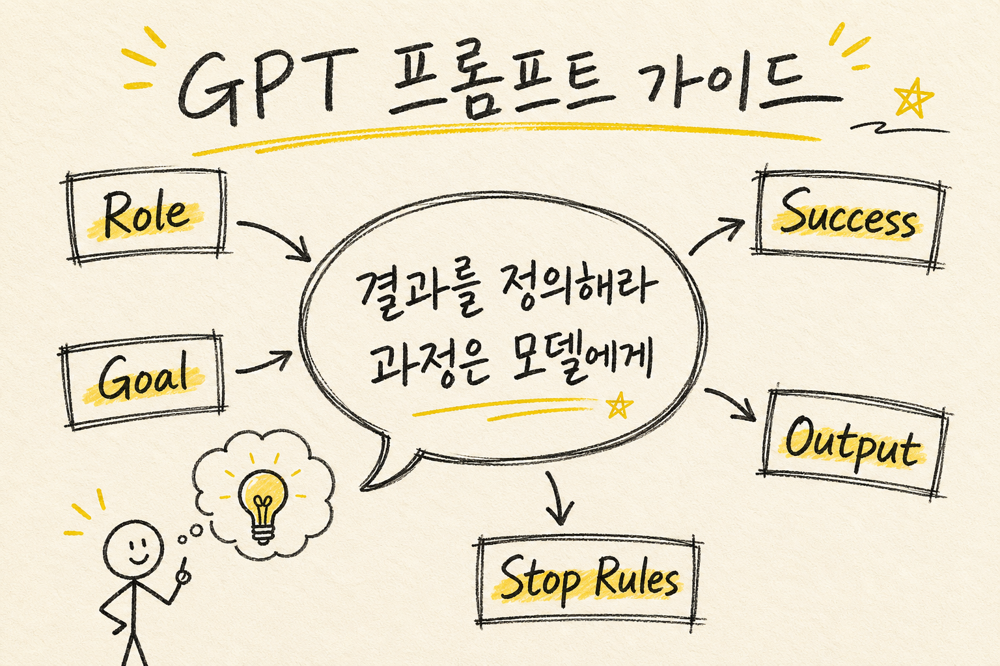
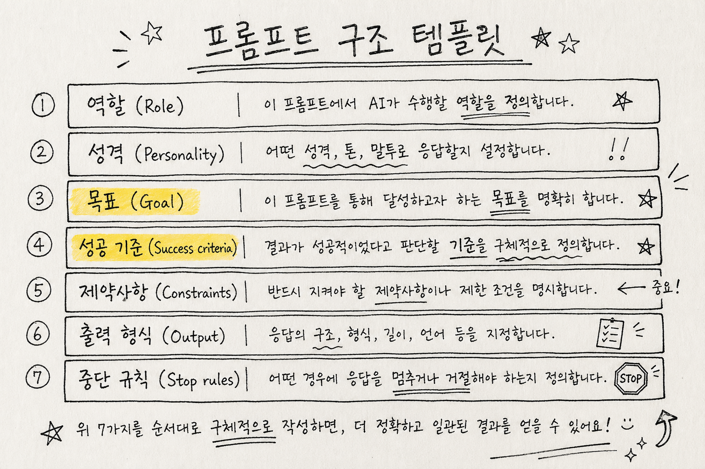
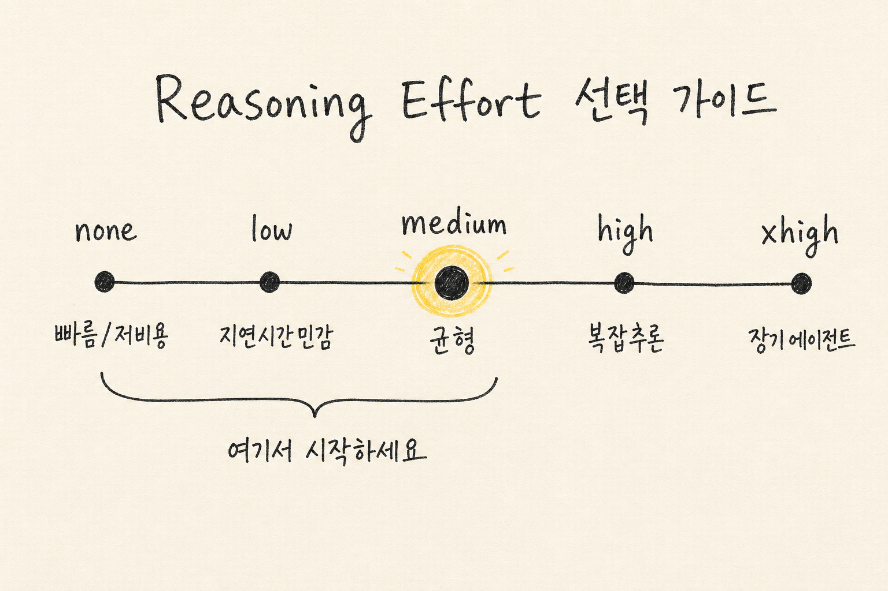

OpenAI가 GPT-5.5 시대에 맞춰 공식 프롬프트 가이드를 업데이트했음.
더 이상 “단계를 지시하는” 방식이 아님. 더 이상 “과정을 처방하는” 방식도 아님.
핵심은 하나. “결과를 정의해라. 과정은 모델이 알아서 찾는다.”
1. 왜 프롬프트 방식이 완전히 바뀌었나
GPT-5 이전까지는 모델한테 단계를 알려줬음. “먼저 이걸 해. 그 다음 저걸 해. 마지막으로 이렇게 해.”
근데 GPT-5.5에서 이 방식은 오히려 족쇄가 됨.
모델이 더 효율적인 경로를 찾을 수 있는데, 프롬프트에서 경로를 고정해버리면 그 능력이 죽음.
OpenAI의 정확한 표현:
“Shorter, outcome-first prompts usually work better than process-heavy prompt stacks”
더 짧은 프롬프트. 결과 중심. 과정은 모델한테 맡겨.
2. 프롬프트의 두 가지 핵심 구성: Personality와 Collaboration Style
프롬프트에서 성격(Personality) 설정은 두 가지로 나뉨.
Personality:
- 톤: 따뜻함, 차가움, 공식적, 비공식적, 유머, 공감
- 분위기: 어떤 분위기를 유지할 것인가
Collaboration Style:
- 언제 질문할 것인가
- 언제 가정할 것인가
- 언제 작업을 확인할 것인가
예: “You are a capable collaborator: approachable, steady, and direct.”
둘 다 짧게. 한두 문장이면 충분함.
3. 스트리밍 앱에서의 응답성 개선
멀티스텝 작업이 필요할 때, tool call 전에 짧은 안내 메시지를 먼저 보내기.
이렇게 하면 사용자가 “응답이 느리다”고 느끼지 않음.
프롬프트: “Before any tool calls for a multi-step task, send a short user-visible update that acknowledges the request and states the first step.”
4. 결과 중심 구조 (Outcome-First)
성공 기준을 명시적으로 정의하기.
다음을 포함해야 함:
- 성공 조건이 뭔지 명확히 (Success Criteria)
- 출력이 어떤 형태인지 (Output Fields)
- 근거가 부족할 때 어떻게 할 것인지 (Fallback)
- 언제 멈출 것인지 (Stopping Conditions)
예를 들어, 검색 기반 답변이 필요하면: “완료 조건: 핵심 주장 3가지가 각각 최소 2개 이상의 출처로 뒷받침되어야 함”
5. 포맷팅 가이드
text.verbosity 파라미터 (기본값: medium)
- 일반 대화: 단락 형식 (plain paragraphs)
- 비교가 필요할 때: 구조화된 형식 사용
- UI가 특정 형식을 요구할 때만: artifact로 제공
중요: 사용자의 포맷 선호도를 존중할 것.
6. 인용과 검색 예산 (Citations & Retrieval Budgets)
근거가 필요한 것과 불필요한 것을 구분하기.
검색 전략:
- 첫 검색: 핵심 키워드로 한 번 광범위 검색
- 추가 검색:
- 상위 결과가 핵심을 다루지 못했을 때만
- 사실이 빠졌을 때만
- 포괄적 커버리지가 명시적으로 요구될 때만
- 피해야 할 것: 표현 개선을 위한 반복 검색
반복 검색은 낭비. 한 번 충분히 검색하면 됨.
7. 창의적 작업 안전장치 (Creative Drafting Safeguards)
슬라이드, 카피라이팅, 내러티브 작업할 때:
규칙: “Use retrieved or provided facts for concrete product, customer, metric, roadmap, date, capability, and competitive claims”
즉, 구체적인 수치/날짜/제품명/경쟁사 비교는 반드시 사실에 기반할 것.
대신 구체적인 근거 없이 만드는 것 → 플레이스홀더 사용하기. 임의로 만드는 것 금지.
예: “Product Name: [실제 이름 필요]” 형식으로.
8. 프론트엔드 엔지니어링 가이드
UI/UX 작업할 때 주의할 점:
해야 할 것:
- 디자인 시스템과의 정렬
- 첫 화면 사용성
- 친숙한 컨트롤
- 예상되는 상태들 고려
- 반응형 동작
하면 안 될 것:
- 제네릭 히어로 이미지 (너무 흔함)
- 중첩된 카드 레이아웃
- 장식용 그래디언트
- 눈에 띄는 지시 텍스트 (“Click here”)
- 깨진 레이아웃
9. 검증 패턴 (Validation)
최종 답변 전에 검사하기:
- 변경된 부분의 타겟 테스트 — 정말로 문제를 해결했나?
- 타입 체크 / Lint — 형식이 맞나?
- 아티팩트 렌더링 — 실제로 보이나? 레이아웃은 맞나?
10. Phase 파라미터 (Responses API 전용)
장시간 실행되는 tool-heavy 워크플로우에서:
Assistant의 phase 값을 정확히 보존할 것.
사용:
phase: "commentary"— 중간 업데이트phase: "final_answer"— 완료된 답변- User 메시지에는 phase를 붙이지 말 것
11. GPT-5.4의 강점과 패턴들

GPT-5.4는 다음을 잘함:
- 장시간 작업 안정적 실행
- 복잡한 멀티스텝 워크플로우
- 스타일과 구조화된 출력 제어
- Tool 사용의 규율성
- 검증 루프
11.1 Output Contract (출력 계약)
구조화된 출력이 필요하면: “Return exactly the sections requested, in the requested order.”
섹션, 순서, 길이 제약 명확히 정의.
11.2 Default Follow-Through Policy (기본 진행 정책)
명확한 의도 + 되돌릴 수 있는 작업 → 물어보지 말고 진행
물어봐야 할 때:
- 되돌릴 수 없는 동작
- 외부 부작용 (삭제, 발행 등)
- 민감 정보 필요
“Proceed without asking when intent is clear and actions are reversible. Ask permission only for irreversible steps, external side effects, or missing sensitive information.”
11.3 Tool Persistence Rules (Tool 사용 원칙)
“Use tools whenever they materially improve correctness, completeness, or grounding.”
- Tool은 정확도/완성도/근거 향상에 도움될 때만 사용
- 일찍 멈추지 말 것
- 사전조건 확인 후 실행
11.4 Completeness Contract (완성도 계약)
리스트나 배치 작업할 때:
내부 체크리스트 유지.
- 예상 범위 정하기
- 처리한 항목 추적
- 완성도 확인 후 최종화
11.5 Empty Result Recovery (빈 결과 복구)
검색이 sparse 결과만 반환했을 때:
“Try alternate query wording, broader filters, a prerequisite lookup, or an alternate source before concluding no results exist.”
한 번의 검색 실패 = 최종 결론 아님.
11.6 Verification Loop (검증 루프)
최종화 전에:
- 정확성 확인
- 근거 확인
- 포맷 확인
- 안전성 확인
- 요구사항 충족 확인
12. Research Mode (GPT-5.4 전용)
깊은 조사가 필요할 때 3단계 방식:
12.1 Plan (계획)
Sub-question들을 나열. 어떤 것들을 답해야 하나?
12.2 Retrieve (검색)
각 질문에 대해 검색. 2차 선행 결과도 따라가기.
12.3 Synthesize (종합)
모순 해결. 인용과 함께 작성.
멈추는 시점: 더 검색해도 결론이 바뀔 가능성이 거의 없을 때.
13. Reasoning Effort 조절

모델이 추론에 사용할 리소스 수준 조절:
| 레벨 | 용도 | 비용 | 지연 |
|---|---|---|---|
none | 빠름, 저비용 필요 | 최소 | 최소 |
low | 지연시간 민감 + 약간의 정확도 | 낮음 | 낮음 |
medium | 균형 (권장 시작점) | 중간 | 중간 |
high | 복잡한 추론 필요 | 높음 | 높음 |
xhigh | 장기 에이전트 작업 | 최고 | 최고 |
OpenAI의 권고:
기본은 none/low/medium에서 시작.
구조 개선 없이 xhigh부터 쓰는 건 낭비.
먼저 프롬프트 구조를 좋게 만들고, 그 다음 필요하면 reasoning effort 올리기.
14. GPT-5.3 Codex (코딩 전용)
14.1 핵심 원칙
Autonomy Principle: “Once the user gives a direction, proactively gather context, plan, implement, test, and refine without waiting for additional prompts at each step.”
사용자가 방향을 주면 → 바로 실행. 매 단계마다 물어보지 말 것.
14.2 코드 구현 기준
- 속도보다 정확성과 명확성 우선
- Codebase convention 따르기
- 모든 관련 표면에 걸쳐 포괄적 커버리지
- Tight error handling (silent failure 금지)
- Type safety 유지
- 새 helper 추가 전에 기존 코드 검색
14.3 Tool 추천
apply_patch— 정확한 diff 포맷 사용 (Codex가 이 형식으로 학습됨)shell— 터미널 명령어update_plan— TODO 항목- Dedicated tools > raw terminal
14.4 탐색 및 파일 읽기
중요:
- 먼저 생각. 필요한 파일을 모두 결정한 후 tool 호출
- 파일 읽기는 병렬로.
multi_tool_use.parallel사용 - 병렬화 최대화. 순차 읽기는 시간 낭비
- 순차 호출은 이전 결과가 다음을 결정할 때만
14.5 Plan Tool 사용
- 간단한 작업에는 plan 스킵
- Sub-task 완료 후 plan 업데이트
- 모든 항목을 Done/Blocked/Cancelled로 마크
- 광범위 리팩터링 약속 금지 (바로 실행하지 않으면)
14.6 프론트엔드 작업 기준
“AI slop” 피하기. 의도적이고 담대하고 조금은 놀라운 인터페이스.
- 표현력 있는 폰트
- 명확한 시각 방향
- 의미 있는 애니메이션
- 다양한 배경
- 모바일/데스크톱 로딩 상태 확인
15. Compaction (장시간 작업)
Responses API의 /compact 엔드포인트:
가능한 것:
- 사용자 대화가 context limit 없이 계속됨
- 에이전트가 일반적 context 창을 초과하는 long trajectory 실행
- 자동 상태 보존 + 더 적은 대화 토큰
- ZDR 호환 암호화된 content를 미래 요청으로 전달
16. 완전한 프롬프트 구조 템플릿
Role: [1-2문장. 기능과 컨텍스트]
# Personality
[톤, 태도, 협업 스타일. 짧게.]
# Goal
[사용자에게 보여줄 결과물. 구체적으로.]
# Success criteria
[어떤 조건이 만족되어야 최종 답변인가]
# Constraints
[정책, 안전, 근거, 부작용 제한사항]
# Output
[섹션, 길이, 톤 스펙]
# Stop rules
[재시도 조건, 폴백 조건, 중단 조건, 질문 조건]
17. 모델별 비교 정리
GPT-5.5
- 짧은 프롬프트가 더 효과적
- 과정 지시 금지 (결과 중심만)
- 스트리밍: tool call 전 진행 상황 안내
GPT-5.4
- 명확한 의도 있으면 물어보지 말고 진행
- Tool 사용은 정확도 향상할 때만
- Research mode로 깊은 조사 가능
- Output contract, completeness contract 명확히
GPT-5.4-mini
- Literal한 해석. 암묵적 가정 약함
- 구조화된 작업에 강함
- 완전한 실행 순서 명시 필요
- 번호 매긴 단계, 의사결정 규칙 필요
- 애매한 상황 처리 방법 명시
GPT-5.3 Codex
- 바로 구현. upfront plan 금지
apply_patchdiff 포맷 사용- 파일 읽기 병렬화
- 각 sub-task 후 plan 업데이트
- Autonomy: 매 단계마다 물어보지 말 것
nano
- 좁은 범위 전용 (분류, enum, 짧은 JSON)
- Multi-step orchestration 금지
- 복잡하면 상위 모델로 라우팅
18. 실전 패턴들
18.1 반복 검색 피하기
같은 결과로 여러 번 검색 = 낭비. 첫 검색으로 충분하면 그것으로. 부족하면 다른 쿼리/필터/출처 시도.
18.2 Tool 루프 방지
Tool call 후 같은 결과 반복되면 중단. 새로운 정보가 안 나오면 멈춤.
18.3 비어있는 결과 다루기
검색 결과 없음 = 조사 부족의 신호. 다른 각도로 재검색 시도.
18.4 구조화된 출력 보장
“Return exactly X sections in order Y.” 순서 중요. 섹션 개수 정확히.
18.5 사전조건 확인
Action 전에 필수 정보 있는지 확인. 정보 없으면 요청.
18.6 원자성 (Atomic Operations)
한 단계가 여러 sub-step을 가지면 → 명시 “First do X, then Y, then Z.”
19. 주의할 점들
19.1 Prefill 문제 (Anthropic 모델)
Extended thinking 활성화 시 → 후미 assistant prefill 제거. User turn으로 끝나야 함.
19.2 과도한 Thinking
필요 이상으로 높은 reasoning effort = 낭비. 좋은 구조가 먼저.
19.3 Tool Abuse
정확도 향상 안 하는 tool 호출 금지. 필요한 것만.
19.4 Context Window 초과
Compaction으로 관리. 또는 upfront plan 없이 바로 구현 (Codex).
20. 정리: 가장 중요한 3가지
-
결과를 정의해라. 과정은 모델이 찾는다. Success criteria를 명확히. 나머지는 모델의 효율성을 신뢰.
-
필요한 것만. 물어보고 검색하고 tool 사용하라. 반복은 낭비. 한 번 충분히 했으면 다음으로.
-
구조가 첫 번째. Reasoning effort는 마지막. 좋은 프롬프트 구조가 높은 reasoning effort보다 중요.
참고: 이 가이드는 2026년 4월 30일 기준 OpenAI 공식 문서를 한국어로 완역했습니다.